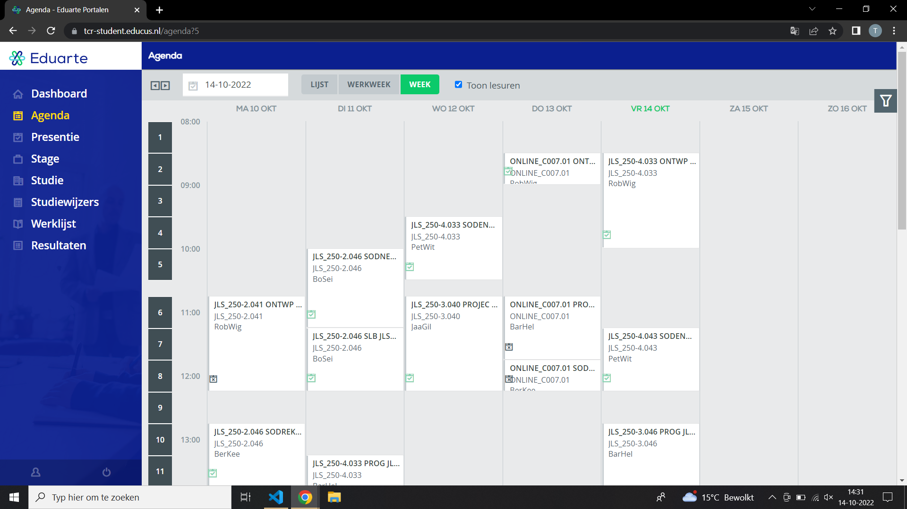
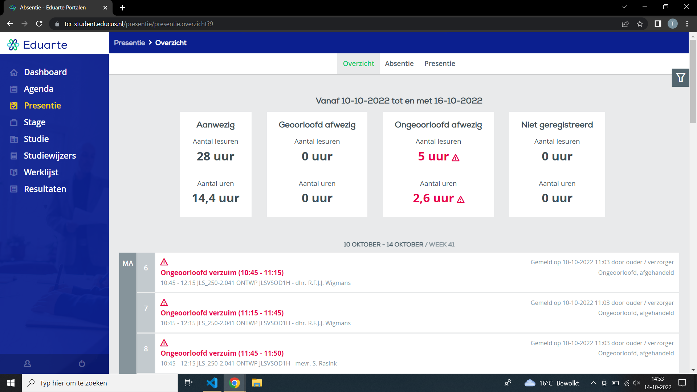
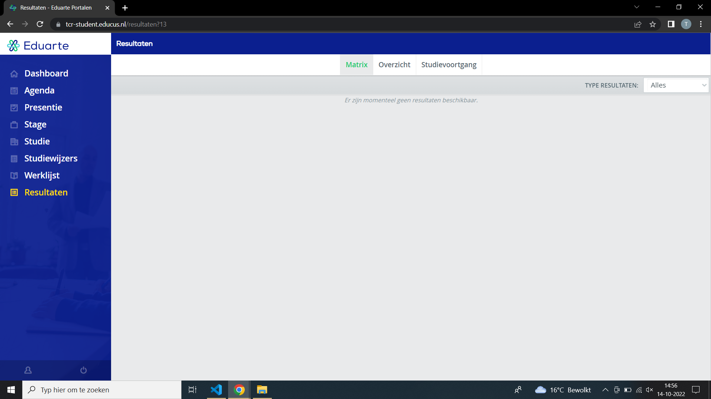

Via Eduarte site kunt u uw resultaten bekijken.
U gaat eerst inloggen en onderaan ziet u uw resultaten.
Eduarte is superhandig want je kunt ook je aanwezigheid bekijken
Ook kan je je rooster bekijken je kan dan zien of je uitval hebt of niet, super handig dus.
Voor als je stage wilt lopen kan je ook via de Eduarte volgen.



 Opleidingswijzer
Locatiegids
Begeleiding
Examenplan
Ouderspreekavonden
Studieadvies
Software
Opleidingswijzer
Locatiegids
Begeleiding
Examenplan
Ouderspreekavonden
Studieadvies
Software